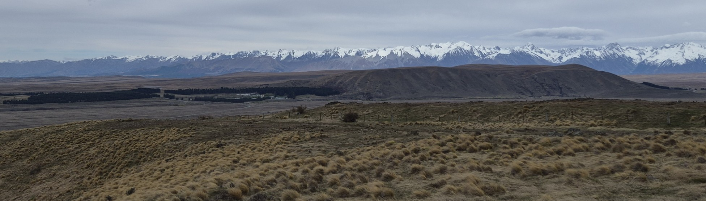
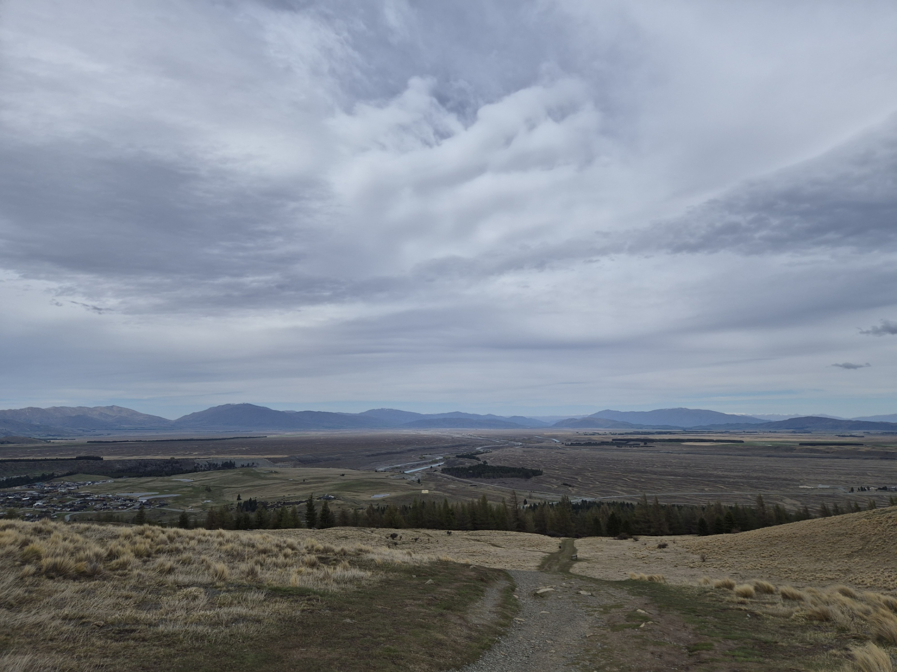

Started work this week. Been mostly cloudy so have not gotten to see many stars but am enjoying getting to know how it all works. The best part is we set up the telescopes at dusk and the views are truly incredible. That may also be because the clouds reflect the sun in pretty colours.
Daytime
Dusk
Another problem is the moon. Been a full moon recently so you see less stars. However the moon has been so bright it acts like a torch, and I don't think have never been fully reliant on the moon for light before. It means you can see the shadows of the mountains and the snow on top, truly lovely. I also saw a moon-rise from behind the mountains, it was so bright and I was very confused!
 
On my day off I went for a walk up mount John, very fun but very windy! It was nice but tireing to climb and then I walked back alongside the lake which was very peaceful. I sat by the lake and had lunch. I listened to a podcast on why the universe exists, which was utterly pointless because the philosipher man just said it is simply a fact we have to accept - no explination at all. He also said physicists look down on philosiphers - maybe if he could actually answer some questions he wouldn't feel looked down upon. Anyway, he's done more than me so can't be too mean. Also very cool fact about galaxy collision, the stars in galaxies are so far apart, the likelehood of 2 bees just flying randomly around the USA colliding is higher than 2 stars colliding in a galaxy collision.